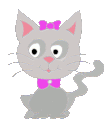
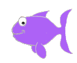
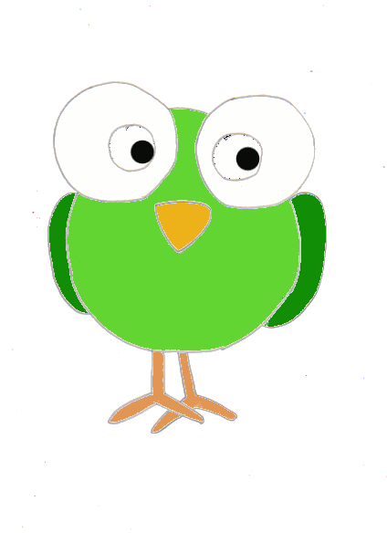
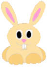
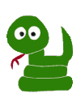

Welcome to the full range of our digipets!
Look closely at the Digipets and watch them move!

This is kitty an adorable and lovable kitten who loves to blow kisses.
Keep her well fed and play with her regular and she will reward you with lots and lots of kisses.
Bruno the dog loves attention. When you talk and play with him he will reward
you by wagging his tail. Feed him twice a day and he will be a friend for life.

This is Puff the fish. When you stroke her back she will blow
bubbles. She is a very easy going pet. You only need to feed her once a day and
she doesn't need too much attention.

This is Tilly the bird. She is a lovable pet with a quirky
personality. She loves to roll her eyes and will keep you entertained with her funny little habits.

Flop the bunny loves to dance. Play some music and watch her bop to it.
She will keep on dancing day after day.

Patti the snake is not a pet for the faint hearted. If you annoy her she will hiss and
rattle her tail. But she is a very easy pet to keep, you only need to feed her once a week.